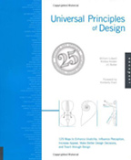
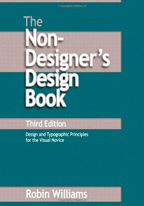
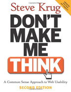

Preface
If you're like most people, you feel like a baby when it comes to visual design. You sometimes have a vague sense of what you want, but can't articulate it or make it come about. All you can do is point and cry. This guide will help you communicate with conscious skill. It will show you how to create designs that are easy to understand and attractive.
Beyond giving you practical tools, I hope this guide inspires you. One of my favorite quotes is, "I open my eyes and I see paradise." What a great gift vision is! What an incredible way to connect to the world around us and to each other. My hope is that this guide will allow you to communicate with more creativity and more control – and that you'll want to learn more.
Table of Contents
1. What is Clean Design?
Have a look at the two flyers below. Which one is more appealing to you? Which one looks cleaner?
If the one on the right looks cleaner to you, then – hooray! I've done my job. But what does it mean to "look cleaner"?
1.1. Clean Designs Reduce the Effort Needed to Find Information
Whatever you're creating — a brochure, a resume, a web page, a party invitation — the basic purpose it must serve is to convey the information your audience is interested in. It must help your audience answer questions like "Is this document the one I'm looking for?" and "What text explains this chart?" and "By what time is the ransom due?" For example, the aikido flyer helps people answer, "What's this about?" and "When is it?" and "Where is it?".
The two versions of the flyer provide the exact same information. The one on the right, however, makes it easier for people to find that information.
That flyer is clean, then, because it helps people find and consume the information within it with less conscious effort. It's designed so that its visual qualities allow the brain's visual thinking capabilities to make correct assumptions about how the different bits of content are organized and about what's important.
This is desirable because visual thinking happens much more quickly than conscious, step-by-step logical thinking. For example, if you wanted to understand what the main ideas were from just the text of the aikido flyers, it would take much longer and be more tedious than it would to use even the "messy" flyer. You can see for yourself by looking at the text to the right.
To answer the question "What is clean design?" most succinctly: a clean design is one that supports visual thinking so people can meet their informational needs with a minimum of conscious effort.
Aikido. Beginner class. Starts Sunday, April 27, 2008, 1:00 - 2:00 p.m. 8-week course — $95. Adult class (12 and older). No martial arts experience necessary. Call to reserve a space. Regular classes. Tuesday 7:30 p.m. Thursday 7:45 p.m. Sunday 1:00 & 2:15 p.m. Come visit. Please come and visit any of our classes to determine if aikido is right for you!
1.2. Informational Needs
People have the same basic informational needs when looking at a document you've designed:
- Deciding relevance. Do I even care?
- Getting an overview. What are the main ideas? What's most important?
- Basic comprehension. What text explains this chart?
- Retrieving buried details. I remember something about an orangutan... where was that?
- Finding actionable details. How do I get in touch?
The informational needs of a single person will usually evolve in roughly the order listed above. For example, if someone's looking at a brochure, his thought process might be something like:
- What's this brochure about? Hm... looks like it's about phrenology. I need a phrenologist!
- What services do they provide? Are they certified? Are they local? My heavens — yes, yes, and yes!
- How do I get in touch? Oh goody, there's the phone number! I'll call when I get home.
- (Later, at home) Now where was that number...
The important to thing to remember is that you're not making your whatever-it-is-you're-making for you. You're making it to help someone else find the information she needs.
This Institute totally exists
1.3. Supporting Visual Thinking
You convey information by the way you arrange a design's elements in relation to each other. This information is understood immediately, if not consciously, by the people viewing your designs. This is great if the visual relationships are obvious and accurate, but if they're not, your audience is going to get confused. They'll have to examine your work carefully, going back and forth between the different parts to make sure they understand.
If you want to feel what this is like, try saying the colors of the words to the right. For example, for the first word you would say "red". Now, try saying the words themselves. Does your brain hurt yet?
It's harder to say the color of each word than it is to say the word itself because our brains automatically determine the semantic meaning of the word. This conflicts with the identification of the color of the word, a process which is not automatic. Our brains must then resolve the conflicting interpretations of the visual stimuli, a process which takes work. (This is known as the Stroop Effect.)
When you're creating a document, you want to eliminate these conflicts between automatically perceived meaning and actual meaning. The rest of this guide is dedicated to doing just that by explaining three visual features: size, proximity, and alignment. It will also explain a valuable tool: elimination. But before that...
purple blue green yellow red red purple green yellow blue blue yellow green red purple yellow blue green red purple yellow red blue green purple green red yellow purple blue purple green red blue yellow yellow red green purple blue blue green purple yellow red green yellow purple blue red yellow green red blue purple yellow purple red blue
1.4. The Most Important Thing to Remember
The basic cause of messy design is slight, unintentional differences among elements. This causes your brain's visual processing to falter. First, your brain has to determine if there actually is a visual difference. Then, it has to determine the significance of that difference. Because the small discrepancies don't actually signify thing, you end up wasting your audience's brainpower. Strive for a consistent visual style where elements which are logically similar look similar to each other and look unambiguously different otherwise.
You can see this in the image at the right. In each set, a block dot differs in size and a green dot differs in color (well it's no longer green in the bottom set, but you get the picture). By using clear, intentional contrast, it's easier to distinguish the different kinds of elements in your design. That makes it easier to find information. And that's what makes clean design.
2. Size
Have another look at the aikido flyers:
How do they use size differently? How do the differences contribute (or detract from) their understandability?
There are two main differences in how size is used between the two flyers. First, the contrast between the header text and the details is much greater; the header text is much larger. Second, size is used consistently among similar elements.
2.1. Use Size Consistently to Indicate Role
These improvements serve to clearly reveal the roles of the different bits of text. The improved flyer makes it clear what's header text and what's detail text. Even if the text were in another language, you would be able to differentiate the headers from the details.
Can you say the same about the original? It has slight changes in font size between one block of text and the next, and no two blocks look quite alike.
For example, the block starting with "Please come and visit" is slightly smaller, but in all caps and bold. Can you easily tell what's header text and what's detail text?
{kind=link}
Click to view full-size
2.2. Recognizable Roles Help Users Find Information
Why is it important to make these roles (in this case, header and detail) obvious? Making these roles visually distinct helps people find the info they need. We rely on headers to help us get an idea of what the document's about. We also use them to narrow in on the details we're most interested in. At the same time, we know to pay less attention to headers when we're going through detail text.
Using size to clearly distinguish the roles of the different bits of content helps people efficiently direct their attention. They know what to focus on and what to ignore, depending on what they're looking for.
You can see the same idea at work at a supermarket. The aisle signs act as headers — they're short, readily noticeable, and they're meant to help you find the brownie mix that you're for some reason craving at 2:00 am.
2.3. Size Summary
Identify the roles of your visual elements.
What purposes do the different bits of text serve? What questions do they help answer? Headers answer questions like "what is this about?" and "where is the contact info?"
Size elements consistently.
Headers should look like other headers. Detail text should look like other detail text. Small variations in size are confusing, because the brain has to figure out if the differences are meaningful.
Provide strong contrast between elements with different roles.
This helps people easily identify the different kinds of content in your design, and that helps them find the information they need.
3. Proximity
Have a look at the kittens below:

When you looked at the collection on the right, did you immediately recognize that there are two groups of kittens? How about the collection on the left - are the kittens grouped?
3.1. Elements Placed Near Each Other Form Groups
When we see kittens (or any other visual elements) placed closely to each other our brains immediately assume that they form a group sharing a unifying concept. The kittens to the right are grouped by color — grey on the bottom, non-grey on the top.
By grouping related content and visuals together you help the user quickly find the information he needs. To prevent confusion and frustration, group elements which are actually related. That sounds obvious, but it's easy to forget.
Examples of this concept abound. For myself, I have this great habit absent-mindedly setting down whatever's in my hand wherever I am. This once resulted in my leaving an open can of cat food in a cupboard amongst piles of tupperware. This made it hard to later find the cat food.
I know what you're thinking: "That's gross! Why would you include that story?" I'll tell you why: it's so you'll think twice before you misuse or abuse proximity in your designs.
3.2. Make Sure the Grouping Is Obvious
Check out the photos to the right. In the left group, you can't really tell who the caption applies to. Which guy has a complicated relationship to hotdogs!? You don't really know. Maybe you can guess based on their facial expressions and on your own experience with hotdogs.
In the right group, however, you can see exactly which photo the caption is meant to apply to.
The lesson is that should leave much more whitespace between non-related elements than related elements in order to make the logical groupings visually clear.
{kind=link}
Click to view full-size
3.3. Proximity Summary
Place related items close to each other.
Our visual brains assume that items placed close to each other form logically related groups.
Make sure the grouping is obvious.
Put enough whitespace between groups to make it clear what elements are actually grouped together. Otherwise people have to go through the trouble of closely examining your design to figure out what goes with what.
4. Alignment
Alignment is crucial to giving your designs a clean appearance and to conveying organization. Slight misalignments are confusing and look messy. On the other hand, using strongly contrasting alignments can make your design more interesting and attractive.
Alignment is one of those features that's easy to overlook — newbies usually don't give any conscious attention to it. However, you can really change the character of your design by changing the alignment.
4.1. Use Alignment to Make It Look Clean
Time for an example! Behold!
Sloppy Alignment
Centerish Alignment
Left Alignment
The slight misalignments in the leftmost "ad" make it look sloppy. If there's one thing you should have learned by now, it's that small, unintentional visual differences are like sand in the engine of your visual brain.
Our brains expect related content to be lined up neatly. If something is slightly out of line, our brains assume there's a reason and try to find it. Since the last line of the ad ("Trapping Hands...") is out of line, our brains search for a reason. When it doesn't find one it send out minute amounts of grumpiness-inducing chemicals that cause us to consider the ad sloppy.
The center ad employs center alignement and doesn't look much better. To be fair, it's not completely centered, but even if it were it would look bad. Centering gives text ragged left and right edges, which look worse the more text there is.
In general, the uncouth barbarians who haven't read this guide are especially prone to center-aligning everything. You can see this in the original aikido flyer, shown to the right.
Often, the best bet is to use left- or right-alignment. You can see left-alignment in the rightmost "Acatemy of Evil" ad. It won't win any awards, but it does look better than the other two ads.
{kind=link}
4.2. Use Alignment to Make It Look Cool
You can make designs look more interesting out by intentionally using different alignments. Have a look at the image to the right.
The headlines "A Checklist for Content Work" and "CSS Floats 101" are centered, as are their bylines. By contrast, the headline "Content-tious Strategy" is left-aligned.
This difference in centering subtly helps to distinguish the content in the left column, indicating that it's more noteworthy than the content in the right column. There are other visual features at play, too. For example, the headlines in the left column are slightly larger and the column is wider. Still, the center alignment is a nice touch.
By the way, this example is a cropped screen shot of the A List Apart home page. The web site exhibits superb design, and you can learn a lot just by looking at it.
{kind=link}
Click to view full-size
4.3. Alignment Summary
Avoid Slight Misalignments
Slight misalignments look messy. Because the brain think that visual differences mean something, a misalignment makes it waste effort trying to figure out the meaning.
Break Your Center Alignment Habit
Center alignment often gives a much "weaker" impression than left or right alignment. It looks especially bad with many lines of text.
Experiment With Contrasting Alignments
Consciously using different alignments in your design can serve to make it look more interesting. It can also make it easier for people to find information in it by further distinguishing the separate sections.
5. Elimination
Often, people add extra lines, boxes, bullets and other visual flotsam in order to convey information that's adequately conveyed with Size, Proximity and Alignment. Including this fluff makes your user’s brain work harder, as it has to figure out the significance of these elements. For example:
Ah yes, our trusty aikido flyers. See how the original flyer has a bunch of lines? Some of the lines act as boundaries, enclosing the entire space and dividing the left and right sections. The rest of the lines separate sub-sections.
All of the lines are thoroughly unnecessary. Proximity and alignment alone provide our visual brains with enough information to distinguish the various chunks of content.
Usually the folks who add these unneeded visual elements do so because there's too much crammed in the design. It's like when you're at a bar and the people around you are talking loudly, so you start talking louder, so they start talking louder, and so on until everyone passes out or goes home.
The solution isn't to add more noise to the design. If instead you use what you've learned here — Size, Proximity, and Alignment — you'll end up with a design that's a pleasure to look at.
6. Learning More
There's so much more to design! Color, typography, harmony, balance, symmetry, rhythm — the list goes on and on, and it's all super fun. The best way to really "get" design, though, is to do it. Just like pickle backs (google it!).
6.1. Observing and Doing
One of my favorite past-times is analyzing the visual design of the stuff I encounter in everyday life. Menus are probably my favorite target: is it easy to tell which price goes with which item? Is it easy to find the dish I want?
It's also fun to keep an eye out for designs produced my average Joe's and Jane's. Basically anything you'd see tacked to a public cork board.
I recommend you take up this practice. Ask yourself what you would do differently. Could you make it cleaner? What would you remove?
6.2. Further Reading
Another great way to learn more is to read design books. As you learn more design concepts, you'll be able to notice them in other designs and apply them in your own. Fun!
Below is a list of books I've read myself which I consider useful for beginners. If you click the links I provide and buy stuff, then Amazon gives me some money. Hooray!
-
-  Universal Principles of Design
-
One of the biggest challenges in learning a new discipline is learning the vocabulary. This book gives you the names for 125 design concepts, with great textual descriptions of the concept and plenty of illustrations. Coverage is succinct and engaging at the same time.
The best thing about this book is that it lends itself to random reading. Pop it open to any page and you'll learn something new.
Buy on Amazon
-  The Non-Designers Design Book
-
This was the first design book I read. It opened my eyes to the world of design, for which I'm very grateful. Robin covers some of the same material as I cover here, but in a different way.
The book also covers typography, and I still think it's the best beginner's guide out there. Worth it for that alone. You can probably find an older edition for a couple bucks.
Buy on Amazon
-  Don't Make Me Think
-
This is a quick and readable book web usability. It really made me understand that design isn't about me trying to show off my creative ability; it's about meeting the needs of your users.
It's a must-have for web developers, but I think almost everyone else would find it interesting too.
Buy on Amazon
7. Closing Thoughts
I hope that you've found this guide informative and entertaining. More than that, I hope you'll feel more creative and confident the next time you have to create any form of visual communication. I'd love to hear any feedback or questions on the site; send it to daniel@flyingmachinestudios.com.
8. Thank Yous
A lot of people took time to give me feedback on this site, for which I am very grateful. Here they are!
- Pat Shaughnessy
- Alex Rothenberg
- Jess Bulu
- Lea Downing
- Su Jones
- Chris Laws
- Nadir Al-Hussein
- Zed Shaw
- Chad Wegner
- Daniel Rodriguez